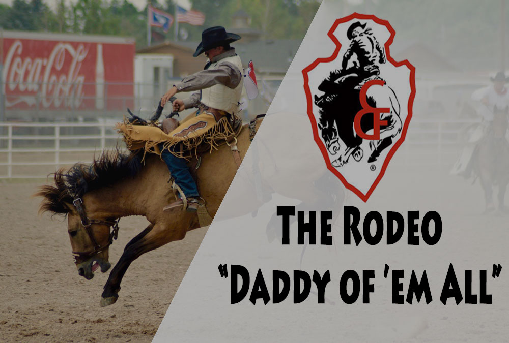
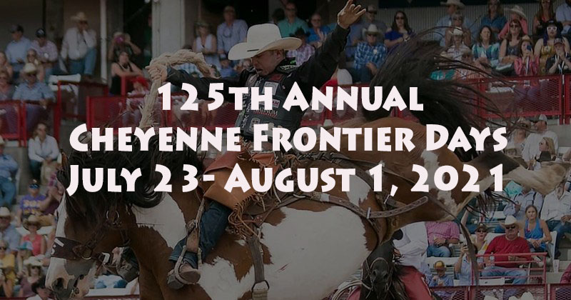

We are just days away from the start of the Cheyenne Frontier Days™ Rodeo 2021. Grab your cowboy boots, hats, horses and ropes for the 125th Annual Cheyenne Frontier Days™, also known as, the “Daddy of ’em All”, is just around the corner, July 23rd-Aug 1st. Bringing the western culture to life with Professional Bull Riding, PRCA rodeo, and nightly performances by top-charting artists, this event is one you will not forget.

| Venue | Frontier Park, Cheyenne, Wyoming, United States |
| Start Date | Friday, 23rd July 2021 |
| End Date | Sunday, 1st Aug 2021 |
| Broadcast | RFD-TV’s / The Cowboy Channel |
So, don’t miss a single moment of the 2021 CFD Rodeo live action. Don’t worry, If you can’t attend in Frontier Park, Cheyenne, WY, we’ll discuss here how to watch Cheyenne Frontier Days 2019 online real-time TV coverage.
When is the Cheyenne Frontier Days 2021?
For individuals who plan on attending the CFD festivities in Frontier Park, there are a variety of sponsored activities to get involved with during the 10-day period between 23rd July to 1st Aug at 7:30AM to 12:30PM (ET). See complete CFD schedule page.
Where will the Cheyenne Frontier Days 2021 be held?
All of the CFD’s main performances will take place at the Frontier Park, Cheyenne, Wyoming. The Cheyenne Frontier Days Arena is a 19,000-seat stadium in Cheyenne, Wyoming, United States. It annually hosts the Cheyenne Frontier Days Rodeo, the evening Night Show, and in the past it hosted chuckwagon races of the Cheyenne Frontier Days.
- Address: 4610 Carey Avenue, 1210 W 8th Ave, Cheyenne, WY 82001
- Capacity: 19,000
- Phone: (307) 778-7200
What TV Channel will the CFD be on?
The entirety of the Cheyenne Frontier Days main performances will air live on the RFD-TV’s / The Cowboy Channel. In an announcement during the Finals for RFD-TV’s THE AMERICAN, The Cowboy Channel, announced a partnership with Cheyenne Frontier Days™ to broadcast live all nine days of rodeo action and feature other Western lifestyle activities from their “World’s Largest Outdoor Rodeo & Western Celebration.”
Watch CFD Rodeo 2021 live streaming
The 2021 Cheyenne Frontier Days Rodeo will be broadcasting the Friday through Sunday performances live on RFD-TV’s / The Cowboy Channel – live, anytime, and anywhere. RFD-TV is an American pay television channel that is owned by Rural Media Group. With this announcement, The Cowboy Channel is now distributed by all major MSOs including DISH channel 232, AT&T U-Verse channel 566, Suddenlink channel 365, Verizon FIOS channel 246, Charter Spectrum, Cox, Comcast, Mediacom, and many other rural cable systems.
How to watch Cheyenne Frontier Days 2021 online?
The CFD Rodeo 2021 will be available on the following devices and platforms: WatchESPN.com, iOS, Apple TV, Android, Chromecast, Kindle Fire, Fire TV, Fire TV Stick, Xbox, Windows 8, and Roku. You must receive TV video service from At&T, U-Verse, Charter, Optimum, Bright House, Comcast, Cox, Dish, Timer Warner Cable, Verizon, Midcontinent, or DirectTV. To see if your provider has access to WatchESPN, visit WatchESPN.com/about. You will most likely need your account number to access. The following are some platforms where these strategies could be useful:
The Cowboy Channel is now distributed by all major MSOs including DISH channel 232, AT&T U-Verse channel 566, Suddenlink channel 365, Verizon FIOS channel 246, Charter Spectrum, Cox, Comcast, Mediacom, and many other rural cable systems.
DirecTV Now
Allows for the viewing of over 65 live channels at $40/month. In order to take advantage of the free possibilities, one would have to sign up and receive the free 7-day trial. If timed properly, one could watch the majority of the Cheyenne Frontier Days Rodeo 2019 during the free trial period and cancel free of charge prior to the trial’s expiration.
The Cowboy Channel Now on DIRECTV. Beginning December 27, 2017, The Cowboy Channel, the first 24-hour television network totally dedicated to western sports and the western lifestyle, will be available on DIRECTV channel 603.
Sling TV
RFD–TV and FamilyNet added to Sling TV’s “Heartland Extra” . In addition to RFD–TV and FamilyNet, Heartland Extra includes the Sportsman Channel, the Outdoor Channel, the World Fishing Network, and PixL. Sling TV subscriptions start as low as $20 per month with the Sling Orange service.
Currently Sling TV carries FamilyNet, which is full of family-friendly content. Starting July 1 that channel will be called The Cowboy Channel and will be a network that will focus on western sports and the western lifestyle.
Netflix
RFD–TV Country Club is a subscription service that lets viewers watch RFD–TV shows live through an online stream, or 24 hours after they’ve aired through Roku and other connected devices. For many popular RFD–TV shows, the Country Club offers every episode of the current season and previous seasons.
DISH Network
RFD–TV is as country as the culture it represents. From auctions to horse races, rural youth to gospel music, DISH Network Satellite TV’s RFD–TV nourishes the soul while it educates, entertains and explores the diverse world of agriculture and country living.
At launch, “The Cowboy Channel” will enjoy distribution into over 30 million homes on cable/satellite systems which carried FamilyNet, and will grow from that great foundation of being on DISH Network channel 232.
RFD-TV Country Club
“Country Club” is the name of RFD-TV’s direct-to-consumer subscription service. Yep, you can watch RFD-TV online without having to subscribe to a single other channel! RFD-TV maintains its own streaming service that shows nothing but RFD-TV content, and that makes it pretty darn affordable to get an RFD-TV live stream. RFD-TV Country Club costs $10 per month or $90 per year (educators can get a half-price discount on the annual rate).
Platform support is a little limited for RFD-TV Country Club right now (it’s only available in your browser, though the in-browser app works on mobile devices, too; we’ll talk more about platform support for all of these services in just a bit). But it’s a great way to get RFD-TV and nothing but RFD-TV at a very attractive price point.
Can I watch Cheyenne Frontier Days on Roku, Fire TV, Apple TV, or Chromecast?
RFD-TV belongs on, well, your TV. So while we love watching streaming television without cable on our smartphones and tablets, let start with the good stuff: how to watch RFD-TV without cable on your smart TV or TV streaming device.
Good news! DirecTV Now and Sling TV both offer apps that work on or with Roku, Fire TV, Apple TV, and Chromecast devices. Sling TV also has an app for Android TV, which is the streaming platform used on some Sony smart TVs, among other devices.
Everything You Need to Know About CFD
Cheyenne Frontier Days is an outdoor rodeo and western celebration in the United States, held annually since 1897 in Cheyenne, Wyoming. It bills itself as the “World’s Largest Outdoor Rodeo and Western Celebration.” The event, claimed to be one of the largest of its kind in the world, draws nearly 200,000 annually. Lodging fills up quickly during the peak tourist season throughout southern and eastern Wyoming, into northern Colorado and western Nebraska. The celebration is held during the ten days centered about the last full week of July. In 2008, Cheyenne Frontier Days was inducted into the ProRodeo Hall of Fame.
Cheyenne Frontier Days Rodeo
Cheyenne Frontier Days™, the 10-day event consists of three categories for competitions; Rough-Stock Events (bareback, saddle bronc, and bull riding), Timed Events (Team and Tie-down Roping, Steer Wrestling, and Barrel Racing), and Racing on the Track (Wild Horse Races).

New to Cheyenne Frontier Days™ is breakaway roping. Breakaway roping is a women’s event; it can be compared to the tie-down roping, as the cowgirl ropes the calf, the rope “breaks away,” as she quickly stops, the cowgirl does not dismount, flank or tie the animal. Breakaway is often a Women’s Pro Rodeo Association (WPRA) -sanctioned event; it will not be considered a sanctioned event by the WPRA in Cheyenne. Two hundred breakaway ropers will compete in Cheyenne, with $10,000 in prize money. The Cheyenne Frontier Days breakaway champion will receive a buckle and saddle, just like the champs from the other events. The competition will start with a clean slate on Finals Sunday and the the highest scores and the fastest times will be the 2021 CFD Champions! Slack in the timed events now becomes a qualifying round to make it into the performances.
- BAREBACK RIDING
- SADDLE BRONC RIDING
- BULL RIDING
- STEER WRESTLING
- TIE DOWN ROPING
- TEAM ROPING
- BARREL RACING
- WILD HORSE RACE
- WOMEN’S BREAKAWAY ROPING
New This Year
A new format is also arising within the Cheyenne Frontier Days™ rodeo. Before 2019, each contestant made only two runs or competed on two head. This year, Cheyenne Frontier Days™ is introducing a new, tournament-style rodeo format. Each rodeo performance will see event winners and money paid out each day. The competition will start with a clean slate on Finals Sunday and then the highest scores and the fastest times will be the 2021 Cheyenne Frontier Days™ Champions! Slack in the timed events now becomes a qualifying round to make it into the performances.
Monday, July 22nd, Cheyenne Frontier Days™ celebrates the men and woman in uniform, all military personnel will receive a FREE ticket to the rodeo, must have a valid ID.
Professional Bull Riding
Cheyenne Frontier Days™ brings Last Cowboy Standing to the arena, a PBR (Professional Bull Riders) event July 23-Aug 1 at 7:45 pm. This two-day event consists of the top-40 riders in the PBR attempting to conquer the rankest bulls in a grueling match between Man vs. Beast for 8 seconds. Only one man will win and be crowned the Last Cowboy Standing!
Entertainment
Not only is Cheyenne Frontier Days known for its rodeo, but it is also known for the entertainment. Hosted by Carnival Americana, the Carnival Midway brings the whole family together for fun rides, delicious fair food, and entertaining games! Open daily 10:30 am to midnight. The Garden located just out-front of the midway is a shaded, comfortable area to hang out and listen to music. Be sure to head over to Buckin’ A Saloon where the fun continues into the night with live music, and dancing; Free with gate admission. Just outside the gates of Cheyenne Frontier Days™ you will hear and see the Indian Village, join in on the fun and experience authentic Native American costumes, dancing, storytelling, flute players and handicrafts. After the Indian Village, continue to Old Frontier Town, where you can meet western merchants, craftspeople, artisans, and more. Be sure to book your tour of behind the chutes. Tours are at 9 am, 10 am, and 5 pm, go behind the scenes and see what goes on during the rodeo! Meet the livestock, hop into the chutes, and finish the tour by walking across the arena, feeling the dirt beneath your feet.
Here is your 2021 Cheyenne Frontier Days Concert Lineup!
The PRCA Rodeo performances at CFD takes place every day, right from July 24 to August 1, between 1 pm to 4 pm. Check out the complete schedule of musical performances to be held during Frontier Nights at CFD 2021.
- Friday, July 23: Garth Brooks with Ned Ledoux
- Saturday, July 24: Thomas Rhett with Rhett Akins
- Sunday, July 25: Cody Johnson with Aaron Watson
- Monday, July 26: PBR: Last Cowboy Standing
- Tuesday, July 27: PBR: Last Cowboy Standing
- Wednesday, July 28: Maren Morris
- Thursday, July 29: Kane Brown with Restless Road
- Friday, July 30: Eric Church with Ashley McBryde
- Saturday, July 31: Blake Shelton with John King
Final Words
All in all, the Cheyenne Frontier Days Rodeo is a landmark event and a de facto defining period of time within any given rodeo year. For anyone who is a fan of rodeo, the main events and the surrounding festivities are must-see events and must-participate experiences if the financial means allow for it. Don’t miss a minute of the exhilarating Cheyenne Frontier Days Rodeo 2021 live stream action this year from July 23 until August 1.